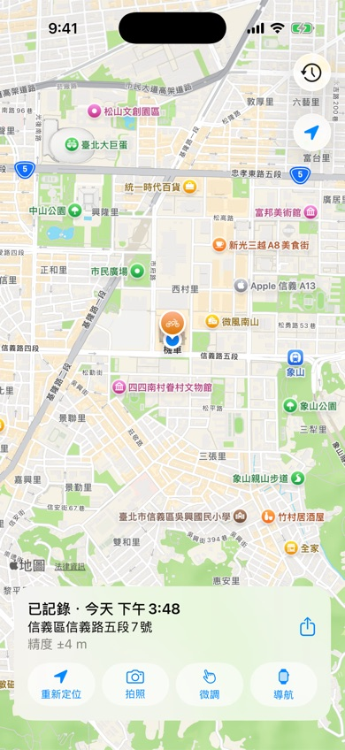
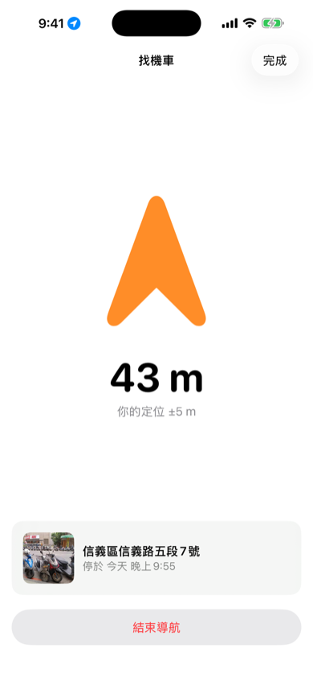
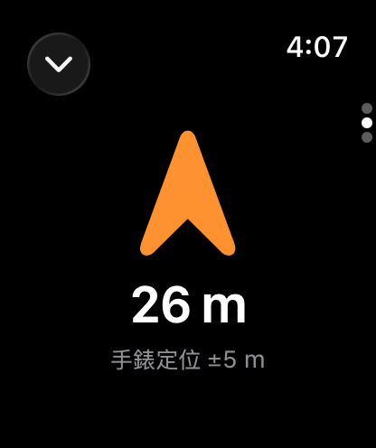
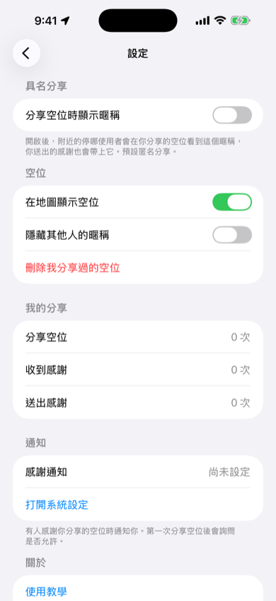

使用教學
四個步驟學會停哪
1. 怎麼使用：停好車，打開就記

- 停好車後打開停哪。第一次使用請允許「使用 App 期間」取用精確位置。
- 停哪會連續取樣 GPS 幾秒鐘，記下的位置通常在幾公尺內，並自動查出地址。
- 如果你離上一個停車點超過 50 公尺，會先問「要把這裡記成新的停車點嗎？」。只是打開看看的話，選「不用，只是看看」。
- 按「拍照」幫停車點拍一張照片，之後找車時看得到。
- 定位偏了？按「微調」，再點地圖把圖釘移到車子實際的位置。
2. 怎麼找車

- 回程時打開停哪，按「導航」。
- iPhone 出現全螢幕的方向箭頭，會跟著手機轉向指著你的車，並顯示距離和停車照片。走到附近時會震動提醒。
- 按「完成」可以回到地圖，地圖上會畫出步行路線；主畫面按鈕會變成「找車」，隨時可以再打開箭頭。
- 手機鎖定時，鎖定畫面和動態島也會顯示「機車在東北方 120 m」。抵達後會自動結束。

- 戴著 Apple Watch 時，打開手錶上的停哪會看到步行路線，離車 30 公尺內自動切換成方向箭頭。
- 往下滑可以看停車照片，捏兩下手指（Double Tap）可以切換頁面。
- 把「停哪」加到錶面複雜功能，就能直接看到車停在哪、停了多久。
4. 怎麼開關暱稱

- 預設是匿名分享，別人只會看到「匿名分享」。
- 想讓大家知道是你分享的：點主畫面左上角的齒輪進入「設定」，打開「分享空位時顯示暱稱」，輸入 12 字以內的暱稱。
- 開啟後，你分享的空位會顯示「由「暱稱」分享」，你送出的感謝也會帶上暱稱。
- 要改回匿名，關掉同一個開關即可；停哪會詢問是否刪除你之前分享過的空位。也可以隨時按「刪除我分享過的空位」。
暱稱不能包含不雅字詞、電話號碼或連結。看到不當的暱稱，可以在空位畫面右上角選「檢舉暱稱」或「封鎖這位騎士」；不想看到任何暱稱，可以在設定打開「隱藏其他人的暱稱」。
更多
- Siri：說「嘿 Siri，停哪記錄停車」。
- 動作按鈕：到 iPhone「設定」>「動作按鈕」選「捷徑」，再選停哪的「記錄停車位置」。
- 自動記錄：在「捷徑」App 建立自動化，例如掃描 NFC 貼紙或安全帽耳機藍牙斷線時執行「記錄停車位置」。
- 地圖樣式：地圖右上角的圖層按鈕可以切換標準、混合、衛星、簡潔。